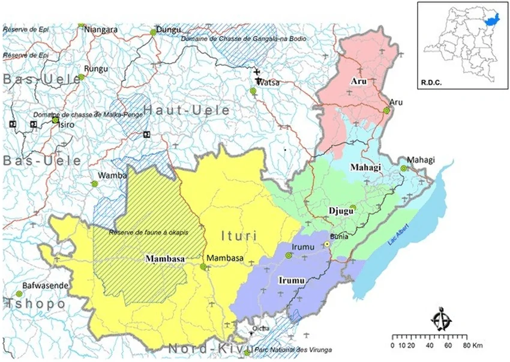
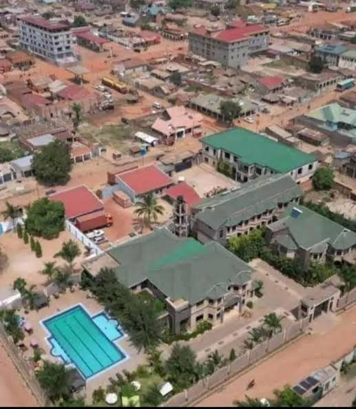
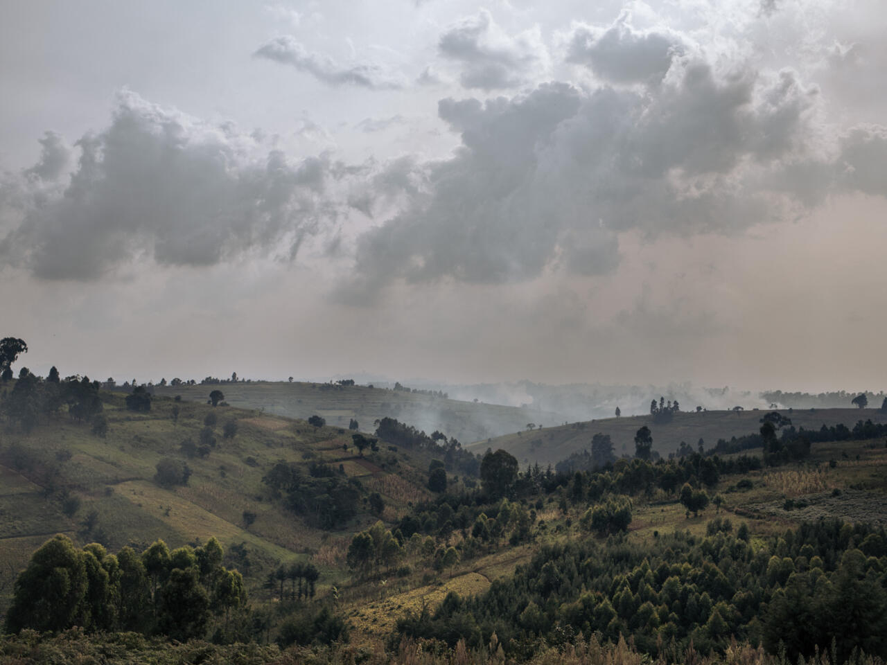
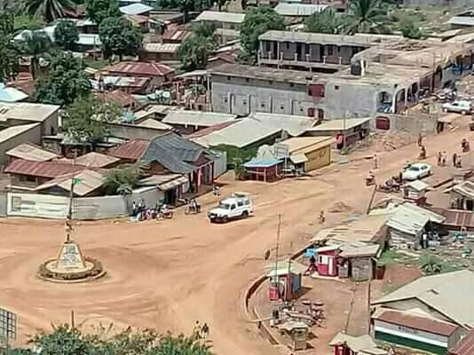
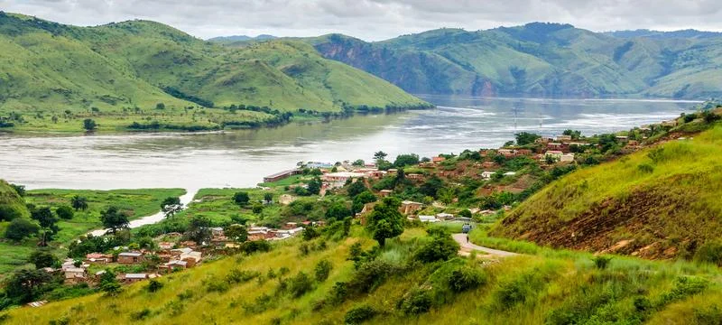
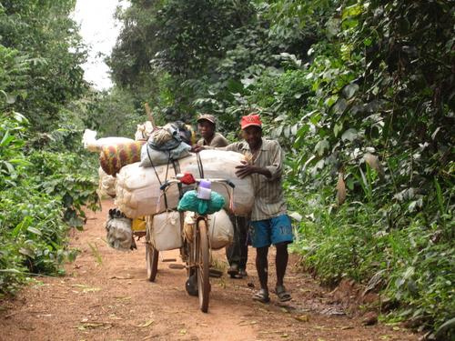

Ituri Province is divided into five administrative territories: Aru, Djugu, Irumu, Mahagi and Mambasa.

The map shows the geographical distribution of the five administrative territories of Ituri Province.

Aru is located in the northern part of Ituri, near the international border with Uganda and South Sudan. Agriculture and cross-border trade are important activities in the area.

Djugu is located in the central part of Ituri. It has many rural communities whose livelihoods include agriculture, livestock keeping and trade.

Irumu is an important territory in Ituri. Its communities engage in agriculture, trade and other local economic activities.

Mahagi is located in the northern part of the province, near Lake Albert and the Ugandan border. Fishing, farming and trade contribute to local livelihoods.

Mambasa is known for its forest environment and natural resources. Agriculture, forestry and other activities contribute to the local economy.
The five territories play an important role in the development of Ituri Province. Their different natural resources, communities and economic activities contribute to the province's overall growth.
Back to About Ituri